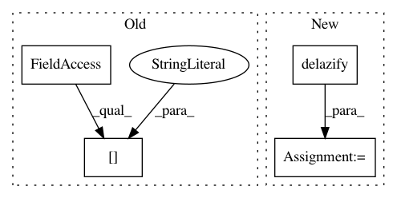

280b7e7794bf2ee118328075d49e27c009c063f2,gpytorch/models/exact_prediction_strategies.py,DefaultPredictionStrategy,get_fantasy_strategy,#DefaultPredictionStrategy#Any#Any#Any#Any#Any#,106
Before Change
// Form new root Z = [L 0; lower_left schur_root]
num_fant = schur_root.size(-2)
m, n = L.shape[-2:]
new_root = torch.zeros(*batch_shape, m + num_fant, n + num_fant, device=L.device, dtype=L.dtype)
new_root[..., :m, :n] = L
new_root[..., m:, :n] = lower_left
new_root[..., m:, n:] = schur_root
After Change
// ...
// else:
L = delazify(L)
num_fant = schur_root.size(-2)
new_root = torch.zeros(*batch_shape, m + num_fant, n + num_fant, device=L.device, dtype=L.dtype)
new_root[..., :m, :n] = L
new_root[..., m:, :n] = lower_left
In pattern: SUPERPATTERN
Frequency: 3
Non-data size: 4
Instances
Project Name: cornellius-gp/gpytorch
Commit Name: 280b7e7794bf2ee118328075d49e27c009c063f2
Time: 2020-07-23
Author: balandat@fb.com
File Name: gpytorch/models/exact_prediction_strategies.py
Class Name: DefaultPredictionStrategy
Method Name: get_fantasy_strategy
Project Name: cornellius-gp/gpytorch
Commit Name: 30ca6105f64f1cbbdb7f012bc848ed840e6f3682
Time: 2019-04-12
Author: gpleiss@gmail.com
File Name: gpytorch/models/exact_prediction_strategies.py
Class Name: DefaultPredictionStrategy
Method Name: exact_predictive_mean
Project Name: cornellius-gp/gpytorch
Commit Name: 76c081b840cd71b20d8ac8692b312ebef95eae75
Time: 2019-04-11
Author: gpleiss@gmail.com
File Name: gpytorch/models/exact_prediction_strategies.py
Class Name: DefaultPredictionStrategy
Method Name: exact_predictive_mean